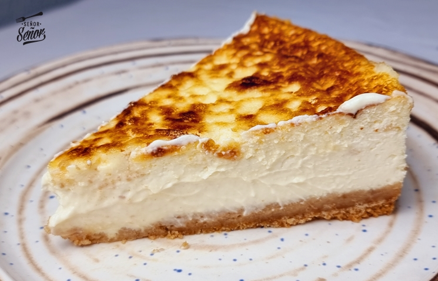
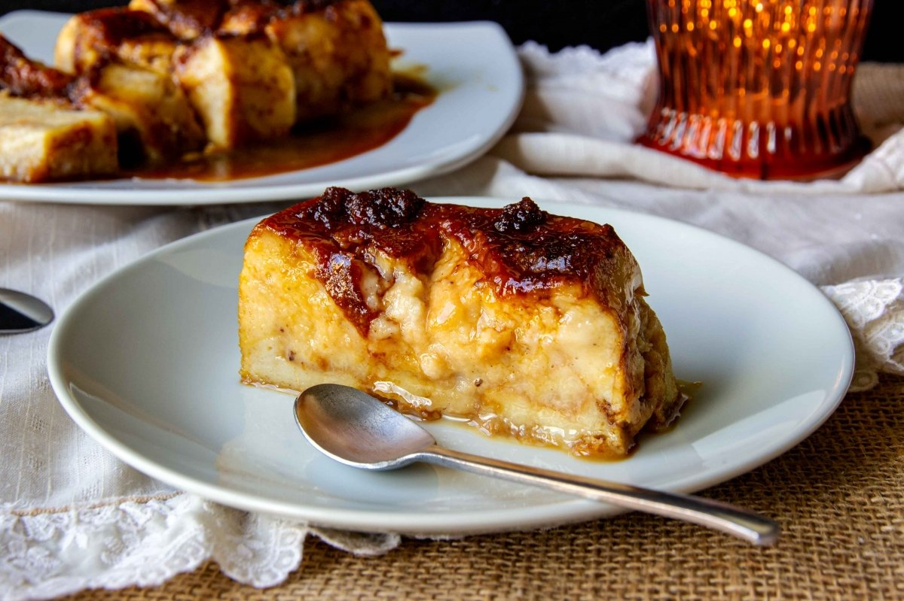

Tarta de Queso Postre de queso preparado con nitrógeno líquido  Receta - Paso a paso Comprar ingredientes Hacer molde de Tarta Hacer Tarta Hornearla
Pan de Calatrava Aquí podemos ver uno de nuestros postres caseros  Receta - Paso a paso Comprar ingredientes Machacar pan Hacer Pan Hornear